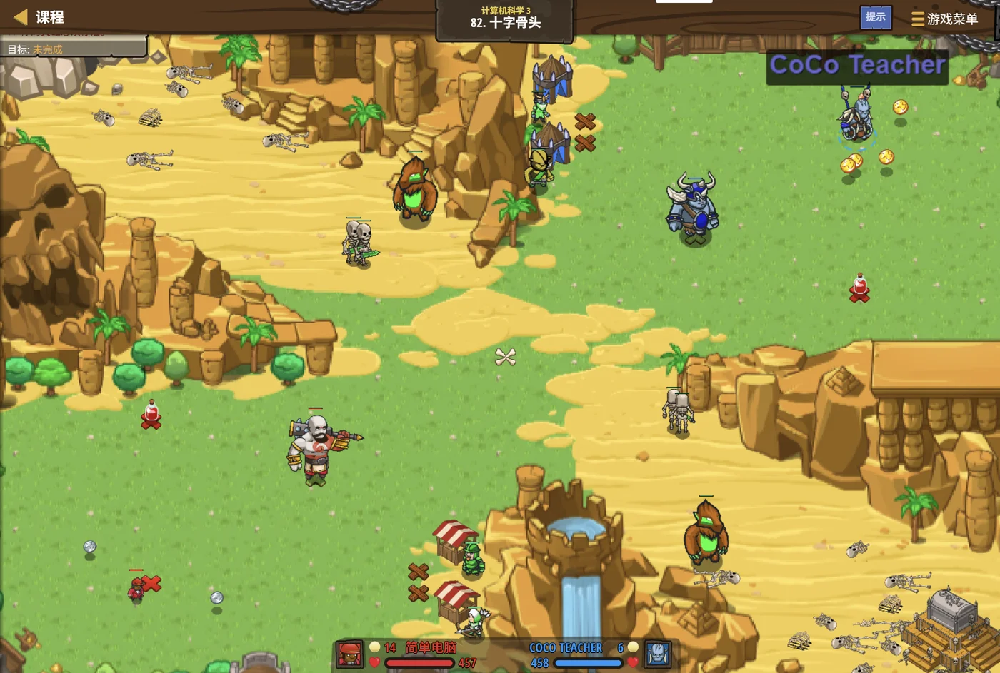

故事：炙热沙漠的入口，两支队伍隔着一道沙脊对峙：
骑士 Tharin 带着人类突击队，猎头者 Deadtooth 拦在沙丘上。
你干的不是冲锋，而是后勤——在两边营地之间来回跑：
捡金币、走到营帐前的 X 标记上招募雇佣兵，再把队伍推上去。
塞尼克按住你的手：别急着招。先算账。
你身上有多少钱？一个兵多少钱？够招几个、还剩多少零头？
他敲了敲沙地：这几个问题，全是整除与余数。
扣哒考级 · GESP C++ 五级 · 第 1 单元 | 星砂绿洲 STARDUST OASIS
绿洲密码 初等数论基础
Elementary Number Theory

塞尼克
沙海向导 · 你的向导
沙漠的尽头立着一道石门，门上刻着一串数字：3、7、11、19。
塞尼克把水壶往沙地上一放：这门只认数字的规律。
你盯着那串数看了半天：它们……都只能被 1 和自己整除。
沙海向导笑了：答对了。欢迎来到星砂绿洲—— 这里的一切秘密，都藏在"数"的骨头里。
塞尼克把水壶往沙地上一放：这门只认数字的规律。
你盯着那串数看了半天：它们……都只能被 1 和自己整除。
沙海向导笑了：答对了。欢迎来到星砂绿洲—— 这里的一切秘密，都藏在"数"的骨头里。
塞尼克 · 沙海向导
前面四级，你学的都是"怎么把程序写出来"。从这一级开始，我们要学的是"数"本身的规律——它有个名字，叫初等数论。
别被这个名字吓到。它讲的东西你小学就见过：整除、余数、质数、最大公约数。
assets/illustrations/py-L5-01-01_oasis_gate.webp
【配图位】沙漠尽头的绿洲石门，门楣上刻着一串发光数字（3、7、11、19），门缝里透出棕榈与水的绿意；一名披着沙色斗篷的向导站在门旁举着水壶，脚下沙面上画着一圈圈刻度与余数刻痕，远处是起伏的沙丘与满天星斗。
0 单元导语与目标
Unit Overview
0.1 学习目标
1学完这个单元，你将能……
- 判断两个数是否"整除"
- 熟练用
%求余数 - 找出一个数的全部约数
- 把一个数分解成质数的乘积
- 用分解的结果算约数个数
- 求最大公约数与最小公倍数
- 说出同余的几个常用性质
2对标 GESP 考纲（C++ 五级）
- 掌握整除性与余数的概念
- 掌握约数、倍数、质数与合数的判定
- 理解唯一分解定理并能做质因数分解
- 掌握最大公约数与最小公倍数的计算
- 理解同余的概念与基本性质
0.2 考纲对照
| 本单元小节 | 对应考纲条目 | 真题常考形式 |
|---|---|---|
| 1 整除与余数 | 整除性、余数 | % 的结果；整除的判定 |
| 2 因数与倍数 | 约数、倍数、质数、合数 | 一个数有几个约数；判断质数 |
| 3 唯一分解定理 | 质因数分解 | 分解是否正确、唯一 |
| 4 最大公约数与最小公倍数 | gcd 与 lcm | 两者的关系式；求值 |
| 5 同余 | 同余的概念与性质 | 判断同余式是否成立 |
1 整除与余数
Divisibility & Remainder
1.1 整除：刚刚好除尽
如果 a 除以 b 的余数是 0，我们就说
b 能整除 a，记作
b | a。
怎么判断整除
C++
int a = 12, b = 3;
if (a % b == 0) {
cout << b << " 能整除 " << a << endl;
}
// 换个说法：a 是 b 的倍数，b 是 a 的约数
// 12 % 3 == 0 → 3 | 12 成立
// 12 % 5 == 2 → 5 | 12 不成立OUTPUT 3 能整除 12
记法
记法
b | a 读作 "b 整除 a" 或 "a 能被 b 整除"
两个最容易搞混的地方：
① 竖线方向别写反。
记法：竖线左边是"小的那个"（约数），右边是"大的那个"（倍数）。
②
3 | 12 是对的，
因为 3 确实能整除 12；而 12 | 3 是错的。记法：竖线左边是"小的那个"（约数），右边是"大的那个"（倍数）。
②
% 是"取余"，/ 是"取整商"。
判断整除要用 %；写 a / b == 0 是错的——
当 a < b 时它也为 0，会误判。
1.2 取模：只留余数
% 运算的几个例子
C++
cout << 12 % 5 << endl; // 2 12 = 5×2 + 2
cout << 7 % 7 << endl; // 0 刚除尽
cout << 3 % 10 << endl; // 3 小的除以大的，余数就是它自己
cout << 100 % 7 << endl; // 2 100 = 7×14 + 2
// 判断奇数还是偶数
int n = 17;
if (n % 2 == 1) cout << "奇数" << endl; // 奇数
if (n % 2 == 0) cout << "偶数" << endl;OUTPUT 2 / 0 / 3 / 2 / 奇数
关键
关键
a % b 的结果永远落在 0 到 b−1 之间（a 非负时）
打个比方：
取模就像分扑克牌——每人发 5 张，发到最后不够发一轮，剩下的那几张就是余数。
17 张牌，每人 5 张 → 发出 3 轮（15 张），剩 2 张。 所以
17 张牌，每人 5 张 → 发出 3 轮（15 张），剩 2 张。 所以
17 % 5 == 2，
而且剩下的张数一定小于 5——这就是"结果永远在 0 到 b−1 之间"的道理。
2 因数与倍数
Divisors & Multiples
2.1 约数与倍数
找出一个数的全部约数
C++
int n = 12;
for (int i = 1; i <= n; i++) {
if (n % i == 0) {
cout << i << " ";
}
}
cout << endl; // 1 2 3 4 6 12
// 12 的约数一共 6 个
// 1 和它自己是每个数都有的约数OUTPUT 1 2 3 4 6 12
注意 循环要跑到 i = n（用
注意 循环要跑到 i = n（用
<=），
否则会漏掉 n 自己
三条要记住：
① 约数与倍数是"一对"——12 是 3 的倍数，3 就是 12 的约数。
② 1 和它自己是每个正整数的约数。
③ 约数总是成对出现：若
② 1 和它自己是每个正整数的约数。
③ 约数总是成对出现：若
d 是 n 的约数，
那么 n / d 也是。
所以只要试到 √n 就够了（这一点下一单元还会用到）。
2.2 质数与合数
| 类别 | 定义 | 例子 |
|---|---|---|
| 质数（素数） | 只有 1 和它自己两个约数的、大于 1 的整数 | 2、3、5、7、11、13…… |
| 合数 | 除了 1 和它自己，还有别的约数的、大于 1 的整数 | 4、6、8、9、10、12…… |
| 既不是质数也不是合数 | 1 | 1 |
判断一个数是不是质数
C++
bool isPrime(int n) {
if (n < 2) return false; // ★ 0 和 1 都不是质数
for (int i = 2; i <= n / i; i++) { // ★ 只试到 √n 就够了
if (n % i == 0) return false;
}
return true;
}三个要点
①
② 循环到
③ 一旦找到约数就
n < 2 必须单独判断；② 循环到
√n 就够，写法 i <= n / i 可以避免溢出；③ 一旦找到约数就
return false，不用再试
为什么只用试到 √n？
因为约数是成对出现的。
比如 36：1×36、2×18、3×12、4×9、6×6——每一对里总有一个 ≤ √36 = 6。
所以只要试到 6，就能确认它没有别的约数。
试到 √n 而不是 n，效率差了好几倍——数据一大就是"能过"和"超时"的区别。
比如 36：1×36、2×18、3×12、4×9、6×6——每一对里总有一个 ≤ √36 = 6。
所以只要试到 6，就能确认它没有别的约数。
试到 √n 而不是 n，效率差了好几倍——数据一大就是"能过"和"超时"的区别。
3 唯一分解定理
Fundamental Theorem of Arithmetic
3.1 每个数都有一份"质数配方"
唯一分解定理（也叫算术基本定理）：
任何一个大于 1 的整数，都能写成若干个质数的乘积——而且写法只有一种（不计顺序）。
比如
这就是"唯一"两个字的含义。
比如
360 = 2³ × 3² × 5。
除了把顺序换一换，你再也找不到第二种把 360 拆成质数乘积的办法。这就是"唯一"两个字的含义。
怎么把一个数拆成质数
TEXT
把 360 拆开：
360 ÷ 2 = 180 ← 从小质数开始试
180 ÷ 2 = 90
90 ÷ 2 = 45 ← 2 除不动了
45 ÷ 3 = 15
15 ÷ 3 = 5 ← 3 除不动了
5 ÷ 5 = 1 ← 5 也除完了
所以 360 = 2 × 2 × 2 × 3 × 3 × 5 = 2³ × 3² × 5
拆的过程中，商一路变小，除到 1 就结束。做法 从最小的质数 2 开始试，能整除就一直除，除不动就换下一个数
用代码做质因数分解
C++
int n = 360;
for (int i = 2; i * i <= n; i++) { // 只试到 √n
while (n % i == 0) { // ★ 能整除就一直除
cout << i << " ";
n /= i;
}
}
if (n > 1) cout << n << endl; // ★ 剩下的最后一枚质数
// 输出：2 2 2 3 3 5OUTPUT 2 2 2 3 3 5
最后那行
最后那行
if (n > 1) 千万别忘
循环结束后，剩下的 n 如果大于 1，它本身就是一个质数
为什么最后要补一句 if (n > 1)？
因为循环只试到
拿 14 举例：从 2 开始，
可 7 还没被输出呢！它自己就是一枚质数， 所以要靠
√n。拿 14 举例：从 2 开始，
14 % 2 == 0，
于是 n 变成 7，这时 i * i = 9 > 7，循环结束。可 7 还没被输出呢！它自己就是一枚质数， 所以要靠
if (n > 1) 把它补上。
3.2 用它数约数
约数个数的公式：
若
例子：
约数个数 = (3+1) × (2+1) × (1+1) = 4 × 3 × 2 = 24。
只要做一次质因数分解，就能"算"出约数有多少个——不用一个一个数。
n = p₁^a₁ × p₂^a₂ × … × p_k^a_k，
那么 n 的约数个数 = (a₁+1) × (a₂+1) × … × (a_k+1)。例子：
360 = 2³ × 3² × 5¹约数个数 = (3+1) × (2+1) × (1+1) = 4 × 3 × 2 = 24。
只要做一次质因数分解，就能"算"出约数有多少个——不用一个一个数。
用分解算约数个数
C++
int n = 360, cnt = 1;
for (int i = 2; i * i <= n; i++) {
if (n % i == 0) {
int e = 0; // 这个质因数的指数
while (n % i == 0) {
n /= i;
e++;
}
cnt *= (e + 1); // ★ 指数 +1 再乘起来
}
}
if (n > 1) cnt *= 2; // 剩下那枚质数的指数是 1
cout << cnt << endl; // 24OUTPUT 24
验算 360 = 2³ × 3² × 5 → (3+1)×(2+1)×(1+1) = 24 ✔
验算 360 = 2³ × 3² × 5 → (3+1)×(2+1)×(1+1) = 24 ✔
公式为什么长这样？
想造一个 360 的约数，你得决定"2 拿几个、3 拿几个、5 拿几个"。
2 可以拿 0、1、2、3 个——共 4 种选择；
3 可以拿 0、1、2 个——共 3 种选择；
5 可以拿 0、1 个——共 2 种选择。
每一种搭配方式，都对应一个不同的约数——所以总数就是 4 × 3 × 2 = 24 个。
这就是"乘起来"的道理：每一步都有若干选择，合起来用乘法原理。
2 可以拿 0、1、2、3 个——共 4 种选择；
3 可以拿 0、1、2 个——共 3 种选择；
5 可以拿 0、1 个——共 2 种选择。
每一种搭配方式，都对应一个不同的约数——所以总数就是 4 × 3 × 2 = 24 个。
这就是"乘起来"的道理：每一步都有若干选择，合起来用乘法原理。
图 2（SVG）：从质因数分解到约数个数
assets/illustrations/py-L5-01-02_prime_pillars.webp
【配图位】沙漠绿洲中一排发光石柱，每根柱子刻着一个数字：刻着素数的柱子独自完整发光，刻着合数的柱子从中间裂成几块小柱、每块上也刻着一个更小的数字；一名披沙色斗篷的向导举着水壶从柱间走过，地面沙面上洒着细小的光点。
4 最大公约数与最小公倍数
gcd & lcm
4.1 两个概念
| 名字 | 英文 | 含义 | 例子（12 和 18） |
|---|---|---|---|
| 最大公约数 | gcd | 两个数公共的约数里最大的那个 | 12 的约数 1,2,3,4,6,12 18 的约数 1,2,3,6,9,18 公共的里最大是 6 |
| 最小公倍数 | lcm | 两个数公共的倍数里最小的那个 | 12 的倍数 12,24,36…… 18 的倍数 18,36,54…… 公共的里最小是 36 |
最朴素的求法（从大到小试）
C++
int a = 12, b = 18;
int g = 1;
for (int i = min(a, b); i >= 1; i--) { // 从小的那个往下试
if (a % i == 0 && b % i == 0) {
g = i; // 第一个找到的就是最大的
break;
}
}
cout << g << endl; // 6OUTPUT 6
思路 从"较小的那个数"往下试，第一个能同时整除两个数的就是最大公约数
思路 从"较小的那个数"往下试，第一个能同时整除两个数的就是最大公约数
这个写法能用，但太慢。
如果两个数都是几亿，最坏要试几亿次——肯定超时。
好在有更聪明的办法。下一单元我们会学"欧几里得算法"， 几千年前的人就已经发现：
它几行代码就能算完，哪怕数字大到几十亿。
好在有更聪明的办法。下一单元我们会学"欧几里得算法"， 几千年前的人就已经发现：
gcd(a, b) = gcd(b, a % b)。它几行代码就能算完，哪怕数字大到几十亿。
4.2 一个漂亮的公式
记住这个关系式：
所以
验证一下：gcd(12, 18) = 6，12 × 18 = 216， 216 ÷ 6 = 36 = lcm(12, 18) ✔
只要会算 gcd，就顺带会算 lcm 了。
gcd(a, b) × lcm(a, b) = a × b所以
lcm(a, b) = a / gcd(a, b) × b。验证一下：gcd(12, 18) = 6，12 × 18 = 216， 216 ÷ 6 = 36 = lcm(12, 18) ✔
只要会算 gcd，就顺带会算 lcm 了。
写 lcm 时，先除后乘！
错误写法：
正确写法：
记法："先除后乘，安全第一。"
a * b / g——
当 a、b 都是十几亿时，a * b 会先溢出，结果就全错了。正确写法：
a / g * b——
先除掉公约数，数字变小了再乘，就不容易溢出。记法："先除后乘，安全第一。"
5 同余：数字的"钟表"
Congruence
5.1 同余是什么
同余的定义：
如果
例子：
a % m == b % m，就说 a 与 b 对模 m 同余，
记作 a ≡ b (mod m)。例子：
17 ≡ 5 (mod 12)——
因为 17 % 12 = 5，5 % 12 = 5，
它们的余数相同。
用代码验证同余
C++
int a = 17, b = 5, m = 12;
if (a % m == b % m) {
cout << "17 与 5 对模 12 同余" << endl;
}
// 也可以换个角度看：
// a ≡ b (mod m) 等价于 (a - b) 能被 m 整除
cout << (17 - 5) % 12 << endl; // 0 → 说明能整除OUTPUT 17 与 5 对模 12 同余 / 0
两种等价说法
两种等价说法
a % m == b % m ⟺ (a − b) % m == 0
打个比方：
同余就像看钟表——时针走过 17 小时和走过 5 小时，指向的是同一个位置。
因为钟面上只有 12 格（模 12），走到 12 就"绕回来"了。
这就是"取模"又叫"模运算"的原因：它在数轴上做的是"转圈"。
因为钟面上只有 12 格（模 12），走到 12 就"绕回来"了。
这就是"取模"又叫"模运算"的原因：它在数轴上做的是"转圈"。
5.2 三条常用性质
三条最常用的同余性质（同加、同乘、同幂）：
① 加法：若
② 乘法：若
③ 幂：若
一句话：同余式两边可以同时加、同时乘、同时乘方——结果依然同余。
a ≡ b (mod m)，
则 a + c ≡ b + c (mod m)。② 乘法：若
a ≡ b (mod m)，
则 a × c ≡ b × c (mod m)。③ 幂：若
a ≡ b (mod m)，
则 aⁿ ≡ bⁿ (mod m)。一句话：同余式两边可以同时加、同时乘、同时乘方——结果依然同余。
性质怎么用：算大数的余数
C++
// 求 2 的 100 次方除以 7 的余数
// 直接算 2^100 早就溢出了 —— 靠"边乘边取模"绕过去
int m = 7, r = 1;
for (int i = 1; i <= 100; i++) {
r = r * 2 % m; // ★ 每乘一次就取模
}
cout << r << endl; // 2
// 因为 a ≡ b (mod m) 时 a×c ≡ b×c (mod m)：
// 把中间结果换成一个"更小的同余数"，最后的结果完全一样OUTPUT 2
关键 每步都取模，数字永远保持在 0~6 之间，绝不会溢出
关键 每步都取模，数字永远保持在 0~6 之间，绝不会溢出
"边算边取模"是数论题的命脉。
很多题目的答案要对一个很大的模数取余（比如
你要是老老实实把整个数算出来，早就溢出了。
正确做法是：每做一次加/乘，就立刻取一次模。 根据同余性质，这样算出来的最终答案和"先算完再取模"完全一样——但永远不会溢出。
10⁹+7）。你要是老老实实把整个数算出来，早就溢出了。
正确做法是：每做一次加/乘，就立刻取一次模。 根据同余性质，这样算出来的最终答案和"先算完再取模"完全一样——但永远不会溢出。
assets/illustrations/py-L5-01-03_mod_clock.webp
【配图位】绿洲营地沙地上画着一圈十二格的环形刻度盘，一根细长的指针从起点出发，绕行一圈半后停在第五格；沙面上留着指针划过的弧形痕迹，起点与终点用两道细线连到同一格，暗示"绕圈后回到同一位置"；一名披沙色斗篷的向导蹲在盘边用手指顺着刻度比划。
6 代码实战
Level Practice
关卡
十字骨头
进入关卡 →思路：思路：把"招兵"当成一道数论题——
用 // 算出够招几个整份，
用 % 看还剩多少零头；
再把金币总数做一次质因数分解，看看能不能平均分给几支小队。

assets/stages/py-L5-01-stage1_crossbones.webp
【截图位】十字骨头关卡：炙热沙漠里两队对峙，营帐前立着 X 标记，英雄在营地间捡金币；代码编辑区可见整除、取模与质因数分解语句。
算账三件事：整除、取模、分解
C++
int gold = hero.gold; // 身上有多少金币
int price = 20; // 一个雇佣兵的价格
// ① 整除：最多能招几个？
int canHire = gold / price; // ★ 够几个"整份"
hero.say("能招 " + to_string(canHire) + " 个");
// ② 取模：还剩多少零头？
int left = gold % price; // ★ 剩下的钱
hero.say("还剩 " + to_string(left));
// ③ 质因数分解：这批金币能不能平分给几支小队？
vector<int> factorize(int n) {
vector<int> f;
for (int i = 2; i <= n / i; i++) {
while (n % i == 0) { // ★ 能整除就一直除
f.push_back(i);
n /= i;
}
}
if (n > 1) f.push_back(n); // 剩下的最后一枚质数
return f;
}OUTPUT 能招 18 个 / 还剩 0 / [2, 2, 2, 3, 3, 5]
整除管"够不够"、取模管"剩多少"、分解管"怎么平分"—— 三招合起来，就是战场上的算账工具。
整除管"够不够"、取模管"剩多少"、分解管"怎么平分"—— 三招合起来，就是战场上的算账工具。
和本单元的关系：
这三件事用的是同一套"试除法"骨架——
从 2 开始一路试到 √n，只是停下来之后做的事情不同：
判质数：一旦能整除就立刻返回"不是质数"；
分解：能整除就一直除，除干净为止，同时记录指数；
数约数：把每个"指数 + 1"乘起来。
把这三件事写在一起，是数论题里最常见的组合拳。
去扣哒世界闯这一关 →
判质数：一旦能整除就立刻返回"不是质数"；
分解：能整除就一直除，除干净为止，同时记录指数；
数约数：把每个"指数 + 1"乘起来。
把这三件事写在一起，是数论题里最常见的组合拳。
7 常见陷阱
Common Pitfalls

扣哒鸭 · 调试官
数论题的错，一半栽在"边界"上。四条。
1
忘了 0 和 1 不是质数。

扣哒鸭：质数的定义里有一句"大于 1"，
所以 0 和 1 都不是质数。
判断函数的第一行就该写
判断函数的第一行就该写
if (n < 2) return false;——
少了这句，1 会被误判成质数。正确做法：开头先
if (n < 2) return false;2
求约数时循环写成
i < n。
扣哒鸭：
而 n 一定是自己的约数——少算一个，约数个数就错了。
for (int i = 1; i < n; i++) 会漏掉 n 自己。而 n 一定是自己的约数——少算一个，约数个数就错了。
正确写法：
for (int i = 1; i <= n; i++)3
质因数分解漏掉最后那个质数。

扣哒鸭：循环只跑到 √n，剩下的那个大于 1 的 n 本身就是质数。
比如分解 14：除掉 2 之后 n 变成 7，循环这时已经结束了，7 还没输出呢。
比如分解 14：除掉 2 之后 n 变成 7，循环这时已经结束了，7 还没输出呢。
if (n > 1) cout << n; 这一句千万别忘。正确做法：循环后补
if (n > 1)4
算 lcm 时先乘后除。

扣哒鸭：
正确写法是
a * b / g ——
a 和 b 都是十几亿的时候，a*b 早就溢出成负数了。正确写法是
a / g * b：先除以公约数把数字变小，再乘。记牢：先除后乘——
a / g * b8 题目练习
Practice
前 2 题改编自 C++ 五级真题，其余为原创练习题。
改编自 2026 年 6 月 · C++ 五级 · 判断题 第 9 题判断题
唯一分解定理表明：任何一个大于 1 的自然数，都可以唯一地分解为若干个质数的乘积，
如果不考虑质因数的顺序。（ ）
查看答案与详解
答案：正确（√）。这正是算术基本定理（也叫唯一分解定理）的表述。
两个关键词要抓住：
① "大于 1"——1 既不是质数，也没有质因数分解，所以必须排除在外；
② "不考虑顺序"——
所以"唯一"的含义是：只算质的种类和每种出现的次数，写法只有一套。
这条定理有什么用？它保证了"质因数分解"是一件有意义的事—— 你可以放心地用分解后的形式来代表一个数，因为不会有两个数"配方"相同却大小不同。
对应小节3.1 每个数都有一份"质数配方"。
两个关键词要抓住：
① "大于 1"——1 既不是质数，也没有质因数分解，所以必须排除在外；
② "不考虑顺序"——
12 = 2 × 2 × 3 = 2 × 3 × 2 = 3 × 2 × 2，
看着有三种写法，但把它们按从小到大排好，都是 2² × 3——本质上是同一种。所以"唯一"的含义是：只算质的种类和每种出现的次数，写法只有一套。
这条定理有什么用？它保证了"质因数分解"是一件有意义的事—— 你可以放心地用分解后的形式来代表一个数，因为不会有两个数"配方"相同却大小不同。
对应小节3.1 每个数都有一份"质数配方"。
改编自 2026 年 6 月 · C++ 五级 · 第 8 题单选题
下面代码统计的是整数
n 中质因数 2 的"总次数"
（即 n! 里一共含有多少个因子 2）。
当 n = 40 时，输出的结果是（ ）。int cnt = 0;
for (int i = 2; i <= n; i *= 2) {
cnt += n / i;
}
cout << cnt << endl;
A.
20 B.30 C.38 D.40查看答案与详解
答案：C。这个循环做的是"把每一层能贡献的 2 加上"：
合计：20 + 10 + 5 + 2 + 1 = 38 ✔
A 项（20）是只算了第一层就停了——漏掉了"一个 4 的倍数同时贡献两个 2"这件事。
这个方法的妙处：不用真的把 40! 算出来（那是个 48 位的大数）， 只要数一数"有多少个倍数"就够了。
对应小节2.1 约数与倍数。
i = 2：40 / 2 = 20 —— 40 以内有 20 个 2 的倍数，各贡献 1 个 2；i = 4：40 / 4 = 10 —— 有 10 个 4 的倍数，每个再多贡献 1 个；i = 8：40 / 8 = 5 —— 有 5 个 8 的倍数，再各多贡献 1 个；i = 16：40 / 16 = 2；i = 32：40 / 32 = 1；i = 64 > 40，循环结束。合计：20 + 10 + 5 + 2 + 1 = 38 ✔
A 项（20）是只算了第一层就停了——漏掉了"一个 4 的倍数同时贡献两个 2"这件事。
这个方法的妙处：不用真的把 40! 算出来（那是个 48 位的大数）， 只要数一数"有多少个倍数"就够了。
对应小节2.1 约数与倍数。
原创练习题单选题
已知
n = 2³ × 3² × 5¹，那么 n
的正约数一共有（ ）个。A.
6 B.12 C.24 D.30查看答案与详解
答案：C。用约数个数公式：把每个质因数的"指数 + 1"乘起来。
为什么是这个公式？想造一个约数，就是决定"每种质数拿几个"：
2 有 4 种拿法（拿 0、1、2、3 个）；
3 有 3 种拿法（拿 0、1、2 个）；
5 有 2 种拿法（拿 0、1 个）。
每种搭配都得到一个不同的约数——所以一共 4 × 3 × 2 = 24 个。
顺带一提：这个数其实就是 360， 它的约数确实是 1、2、3、4、5、6、8、9、10、12、15、18、20、24、30、36、40、45、60、72、90、120、180、360——正好 24 个。
对应小节3.2 用它数约数。
(3 + 1) × (2 + 1) × (1 + 1) = 4 × 3 × 2 = 24 ✔为什么是这个公式？想造一个约数，就是决定"每种质数拿几个"：
2 有 4 种拿法（拿 0、1、2、3 个）；
3 有 3 种拿法（拿 0、1、2 个）；
5 有 2 种拿法（拿 0、1 个）。
每种搭配都得到一个不同的约数——所以一共 4 × 3 × 2 = 24 个。
顺带一提：这个数其实就是 360， 它的约数确实是 1、2、3、4、5、6、8、9、10、12、15、18、20、24、30、36、40、45、60、72、90、120、180、360——正好 24 个。
对应小节3.2 用它数约数。
原创练习题判断题
已知
gcd(a, b) = 6，lcm(a, b) = 36，
则 a × b = 216。（ ）查看答案与详解
答案：正确（√）。用那条漂亮的公式：
代入：
验证一下：a 和 b 可以是 12 和 18—— gcd(12, 18) = 6、lcm(12, 18) = 36、12 × 18 = 216，完全吻合。
这条公式为什么成立？把 a、b 都做质因数分解就会发现： gcd 取的是每个质因数的"较小指数"，lcm 取的是"较大指数"； 两者加起来正好等于两边各一份——所以乘起来相等。
实用价值：只要会算 gcd，就能顺带算出 lcm， 不用再单独写一套求最小公倍数的代码。
对应小节4.2 一个漂亮的公式。
gcd(a, b) × lcm(a, b) = a × b。代入：
6 × 36 = 216 ✔验证一下：a 和 b 可以是 12 和 18—— gcd(12, 18) = 6、lcm(12, 18) = 36、12 × 18 = 216，完全吻合。
这条公式为什么成立？把 a、b 都做质因数分解就会发现： gcd 取的是每个质因数的"较小指数"，lcm 取的是"较大指数"； 两者加起来正好等于两边各一份——所以乘起来相等。
实用价值：只要会算 gcd，就能顺带算出 lcm， 不用再单独写一套求最小公倍数的代码。
对应小节4.2 一个漂亮的公式。
原创练习题单选题
执行下面的代码，输出的结果是（ ）。
int r = 1;
for (int i = 1; i <= 100; i++) {
r = r * 2 % 7;
}
cout << r << endl;
A.
1 B.2 C.4 D.溢出，结果不确定查看答案与详解
答案：B。这段代码算的是 2 的 100 次方除以 7 的余数。
先看 2 的幂对模 7 的规律：
周期是 3：2、4、1 循环。
D 项为什么错？因为代码里每一步都取了模——
如果写成
对应小节5.2 三条常用性质。
先看 2 的幂对模 7 的规律：
2¹ % 7 = 2；
2² % 7 = 4；
2³ % 7 = 8 % 7 = 1；
2⁴ % 7 = 2……周期是 3：2、4、1 循环。
100 ÷ 3 余 1，所以答案落在周期的第 1 个位置，也就是 2。D 项为什么错？因为代码里每一步都取了模——
r 永远在 0~6 之间，根本不可能溢出。
这正是"边算边取模"的价值。如果写成
r = r * 2; 循环完再取模，
2¹⁰⁰ 会立刻撑爆 int，结果就全错了。对应小节5.2 三条常用性质。
原创练习题编程题
题目要求：读入一个正整数
样例：输入
n（2 ≤ n ≤ 10⁶），
输出它的全部正约数个数。样例：输入
12，输出 6。查看参考答案与要点
#include <iostream>
using namespace std;
int main() {
int n;
cin >> n;
int cnt = 1; // 约数个数的累乘器，初值取 1
for (int i = 2; i <= n / i; i++) {
if (n % i == 0) {
int e = 0; // 这个质因数的指数
while (n % i == 0) {
n /= i;
e++;
}
cnt *= (e + 1); // ★ 指数 + 1 再乘进去
}
}
if (n > 1) cnt *= 2; // 剩下那枚质数，指数是 1 → 乘 (1+1)
cout << cnt << endl;
return 0;
}
输入 12 输出：6；输入 360 输出：24；输入 997 输出：2
要点：
① 不要一个一个数约数——那要循环 10⁶ 次；
用质因数分解，只要循环到 √n，快得多；
② cnt 的初值必须是 1——
因为它是"累乘器"，取 0 的话怎么乘都是 0；
③ 内层 while 要把同一个质因数除干净，
同时记录它出现了几次（指数 e）；
④ 循环结束后别忘了 if (n > 1)——
剩下的那个质数指数是 1，对约数个数的贡献是乘以 2；
⑤ 循环条件写 i <= n / i 而不是 i * i <= n，
可以避免 i * i 溢出。
对应小节3.2 用它数约数。
9 本单元小结
Unit Summary
塞尼克 · 沙海向导
四句话记住这一课：一、
a % b == 0 就是整除；% 的结果永远在 0 到 b−1 之间。二、质数的定义里有一句"大于 1"——0 和 1 都不是质数；判质数只要试到 √n。
三、每个数都有一份唯一的"质数配方"；约数个数 = 各指数加一后相乘。
四、
gcd × lcm = a × b；算 lcm 要"先除后乘"防溢出。门开了。下一站是泉眼筛网——那里要用一张网，把所有的合数统统筛掉。
你在绿洲石门前收获了什么
- 整除——
a % b == 0；记作b | a， 竖线左边是约数、右边是倍数。 - 取模运算——
a % b的结果永远在 0 ~ b−1 之间； 判断整除必须用%，不能用/。 - 约数与倍数——互为"一对"；约数总是成对出现，所以试到 √n 就够。
- 质数——大于 1、且只有 1 和自身两个约数；0 和 1 都不是质数。
- 判断质数——
if (n < 2) return false;开头， 循环到i <= n / i。 - 唯一分解定理——每个大于 1 的整数都有唯一的质因数分解（不计顺序）。
- 质因数分解的写法——能整除就一直
while除， 循环后要补if (n > 1)。 - 约数个数公式——
(a₁+1)(a₂+1)…(a_k+1)。 - 最大公约数 gcd——公共约数里最大的；朴素的求法太慢，下一单元学欧几里得算法。
- 最小公倍数 lcm——
a / gcd(a,b) * b，先除后乘防溢出。 - gcd × lcm = a × b——会算 gcd 就顺带会算 lcm。
- 同余——
a ≡ b (mod m)等价于a % m == b % m，也等价于(a−b) % m == 0。 - 同余三条性质——可以同加、同乘、同乘方。
- 边算边取模——数论题的命脉；每步都取模就不会溢出。
下一站：泉眼筛网
绿洲的泉眼上架着一面铜丝细网——混着沙粒的水流过网面，沙粒留在网上，清水汇入池中。
下一单元我们学欧几里得算法与素数筛法：
怎么用几行代码求出最大公约数，又怎么用一张"网"把合数统统筛掉。